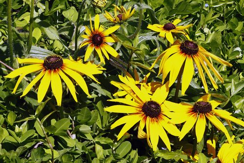

Black eyed Susans
Yellow Black-eyed Susans (Rudbeckia hirta) are cheerful wildflowers native to North America, known for their bright yellow petals surrounding a dark brown or black central cone. These vibrant blooms often symbolize encouragement and positive energy, making them popular in gardens and natural landscapes.
Explore on Picfair ↗